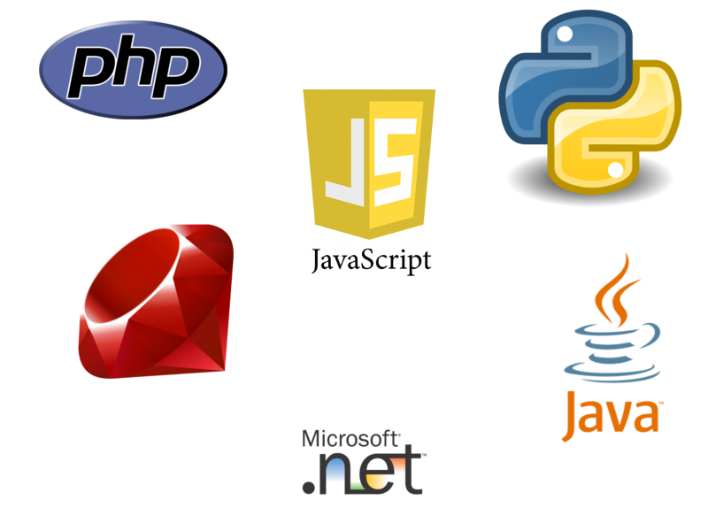
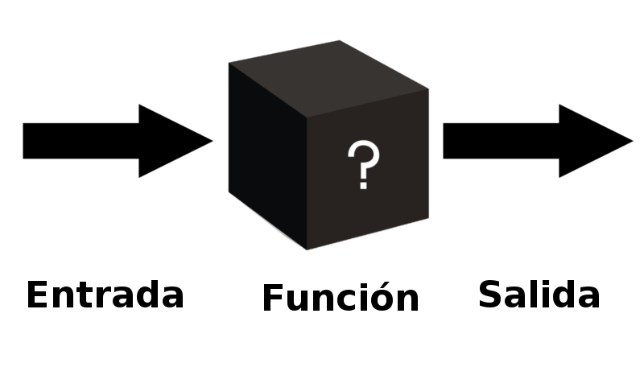

Programación para gente que ve más de 256 colores.
Introducción a la programación
Lenguajes de programación

Compilado e Interpretado
Los lenguajes compilados requieren de un software (compilador) que convierta nuestro código fuente a un archivo binario que se ejecuta
Los lenguajes interpretados utiliza un intérprete (DAH), pero que no requiere una compilación previa para correr la aplicación.
Programación funcional
Los procesos funcionan como una caja negra, en donde tienen un input que le provée datos y devuelven un output.

Para una misma función, con los mismos inputs, debería devolver el mismo output.
Javascript
Javascript
Nació con Nestscape.
Es un leguaje interpretado.
Es un lenguaje orientado a objetos.
Es relativamente sencillo de aprender.
Suele correr del lado del cliente (web browser)
No tiene nada que ver con Java.
¿Cómo ejecutarlo?
Existen dos formas de correr código desde un sitio web, agregando el tag "script" o llamando a un archivo .js externo
<script type="text/javascript">
// Esto se ejecuta
console.log("Vini, Vidi, Vinci");
</script>
<!-- Esto ejecuta lo que tiene el archivo externo -->
<script src='js/awesome-script.js'></script>
Siempre se aconseja la segunda forma, sino el código es difícil de mantener.
Hola mundo
Comentarios
Si no comentan su código, el niñito Dios se pone muy triste... y mata un gatito.
Variables
Imaginen las variables como una caja en donde se pueden guardar cosas. Puede ser texto, un número o algún dato mas complejo.
Sólo letras, números y guión bajo.
Sin espacios en blanco
No puede tener espacios
Sin caracteres como ñ o tildes
Variables II
Traten de usar nombres descriptivos, mejor aún, traten de tener una notación definida.
Javascript es Case-Sensitive.
Eviten ir cambiando el tipo de dato de las variables.
Tipos de Datos
Estos son los tipos de datos que pueden almacenar las variables
Strings
Números
Enteros
Decimales
Negativos
Booleanos
true
false
Undefined
Null
Objetos
Arrays
Strings
El valor del string se define entre comillas dobles o simples.